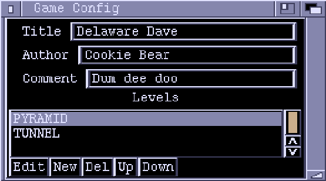
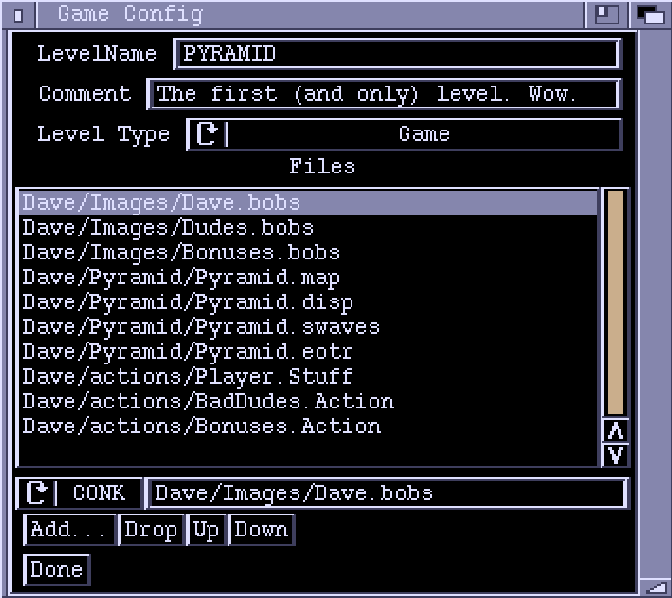

Game Chunk Type
Game Config Window

Title, Author, Comment
Info on your game - fill in how you like.
Levels
A list of the levels making up the game.
Edit Edit the highlighted level. This brings up the level config page.
New
Adds a new level.
Del
Deletes the highlighted level.
Up, Down Moves the highlighted level up or down a place in the list.
Level config page

Level Name
The name to use to identify the level.
Comment
For you to use how you like.
Level Type
- Game is a standard Conk level which uses a Display chunk and
ActionLists (ie a level you've made up with Zonk).
- Anim play an IFF animation, then the next level is called.
- Pic levels have not been programmed yet, but will be for displaying still
pictures. Ponk always starts the game on the first level in the list.
Files
This is a list of all the files to load in for this level. The directory
path for each file is relative to the directory in which you are going to
run Ponk.
The string gadget underneath lets you edit the names directly. The cycle gadget
indicates the type of file
- CONK - Files created in Conk. .game, .action, .bobs, .disp, .sfx
- ILBM - IFF ILBM (Interchange File Format - Interleaved Bitmap) the standard image file. .iff file
- ANIM - An IFF ANIMation. .anim file
- MOD - Tracker Module. .mod
- ???? - unknown
This lets Ponk know what type of file it is dealing with.
Add...
Brings up a file requester to let you pick files. To select multiple files,
hold down the shift key while using the requester. Zonk will try and guess
the file type(s).
Drop
Drops the currently highlighted file from the list.
Up, Down
Move files up and down the list. The order of files is not important.
Done
Exits back out to the Game config page.